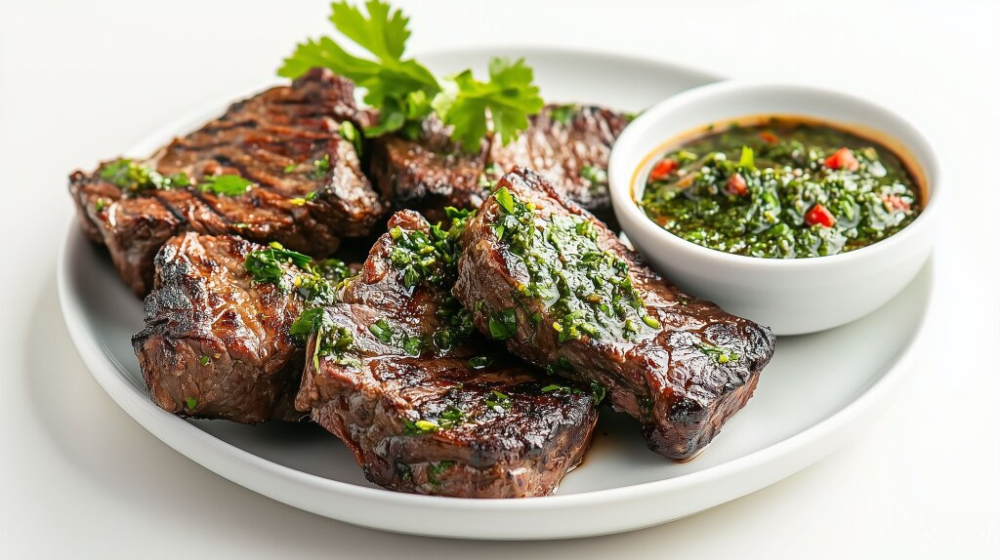

A classic Argentinian dish featuring grilled or pan-seared steak (often flank or skirt) topped with a vibrant, herbaceous, and tangy green sauce.
The sauce consists of finely chopped parsley, oregano, garlic, olive oil, and red wine vinegar, providing a fresh contrast to the rich, charred meat.
Preheat the oven to 375 degrees. (I will usually let my cast iron heat up with the oven so that it’s already hot when I start cooking).
Place steaks on a plate and season generously with kosher salt and black pepper on each side.
Heat the cast iron skillet to medium heat, placing 1 tablespoon of vegetable oil and 1 tablespoon of butter into the pan.
Once butter is melted, place steaks into the pan. Let cook for 3-4 minutes per side until crust is formed.
Add in remaining two tablespoons of butter, rosemary, garlic, and thyme. (Wearing an oven mit!!) tilt the skillet and baste the butter/garlic/herb mixture over the steaks until well coated.
Place entire skillet into the oven for 8-10 minutes. Adjust to preference.
For the chimichurri— place all ingredients in a blender and pulse until combined.